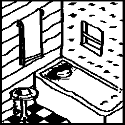

little caesars

• • •
Irma dialed the number randomly, her hand working the rotary on instinct; she was looking for the crackly, bubbly retort of some far away neighbour's answering machine, but the phone would ring only twice before suddenly a voice broke through the noise, peppy, a bit manic…
“Hello, hi, thank you for calling Little Caesars, how may I help you?” causing her to sit up on the bathtub with a jolt. Water sploshed out of the container into her nice chequerboard flooring.
She was like that for a moment, running the four fingers on her free hand through her purple-tinted hair—
(Irma was not human.)
—until soft ruffling traveled through the wire from the other side of the line, followed by a meek little “Hello?” quiet, timid enough to shoot manners back into her, and she coughed, washed some dry tears off her face, and, responded, tentatively,
“Hi…”
…and trailed off. She was not quite sure where to take this conversation now, but really she didn't need to, because there came a skip and a hop from the callee, shoes against wood-paneled floors, and then again “Hi! How may I help you!” through an audible, positively relieved smile.
(Irma concluded that the other person was human.)
well ok you do your bed you sleep in it she delighted in the half-remembered saying; sank deeper into the tub.
She asked “Why are you there?” like it was a normal thing to ask, and the other person—should have asked their name—responded in kind, “Why did you call?” in a customer service tone.
Irma was candid, like one tends to be in these final moments, “I wanted to hear someone else's voice.” The person on the other side tittered politely, and related that, “Yes, me too.”
Irma thought this wasn't the most efficient way of going about that, but most have done so out loud for once again the callee laughed, “You'd be surprised! I've gotten three calls so far.”
Irma didn't say anything, just made a vaguely inquisitive hum. “The first one…” came the voice, tentative, continuing on when no interruption came from Irma, “the first one was an older man. He ordered something with four exclamation marks on the name. Just… placid. Totally calm.” Irma nodded.
“And, well, I'm on my uniform and everything on an empty restaurant, so I really shouldn't have been too confused. It's what I wanted. I just—just thought there would be more counseling involved.” The phone cord was twisted around a thin finger. “I studied to be a Psychologist, you know.”
“You did?” Irma responded, further away, sinking deeper…
“I did. I was really good. Then of course things happened. Good things—great ones, even—that naturally landed me behind a balcony.”
A sigh, “But it's so evil to be mad at progress, isn't it? I was made redundant forever—thank God!”
Irma sat up again; not really sure what she was supposed to be doing about now.
Shrink went on, “The next guy was more the sort—this is terrible—a mess really, I don't even know if he knew why he called. I tried—I don't know. I tried talking. This isn't what Psychology is about. It's stupid.
“Eventually he winded down. I don't know. I should have done the internship at the ward. But I still had psychoanalysis and chaise longues on my mind. The place was creepy, too. He asked if we still did deep-dish and I said 'sure' and 'put in the order.'”
She laughed. “I'd have made a poor doctor.”
“That's not true. What about the third call?” asked Irma.
“Why,” she lilted, after a pause. “The third is you. So… so if you want to play along, I can take your order?”
And Irma thought about it—thought hard enough that she had to step out, dress up, and continue downstairs.
Eventually she just said whatever's good. The attendant thought it was the funniest thing, just funniest thing she could have said. Outside alarms and sirens blared, barren streets, empty homes. But they laughed on about something stupid—all's fine; they felt they could silence the bells now…
The horizon blinked. Miles south a man sat by his door with tears in his eyes and waited. On the opposite man north, something anchored him down to earth. And, just east of both of them, someone melted, and talked.
Flash… and a world's worth of bated breaths.
Nothing happened for a while, and then nothing continued to happen. Birds flew, sang, chirruped, papers blew in the wind, lamps flickered on as the sun peacefully dipped down beneath the far line, with nothing even resembling “rage.”
The world went to sleep rather more metaphorically than imagined.
OK. The two talked and only realised this two hours after it should have happened. Irma had healed fully by now. It was like she had never been in the water at all.
It was touch-and-go for a second, pretty awkward, some tittered “what now”s and “hoo boy”s. They agreed not to exchange numbers.
Irma shut the line eventually with a tiny goodbye, but they could both hear the smile travel sheepishly through the line, and certainly make its way across. She placed the phone back on the receiver with a sigh.
She checked her e-mails and already she had been placed back in the day shift. A motorcycle zoomed by outside, stretching bright xenon shadows of people and lightpoles through her windows, and someone yelled out at the pilot, “fuckin' dipshit!” Terrible music leaked through the neighbouring walls.
Irma felt content, but very tired. She went to sleep and it wasn't until the next day, while hurrying through the motions before work that she vaguely remembered that she never really did ask for the other person's name.
The thought came and went naturally. She drove to work in silence.
☺ FIN ☺